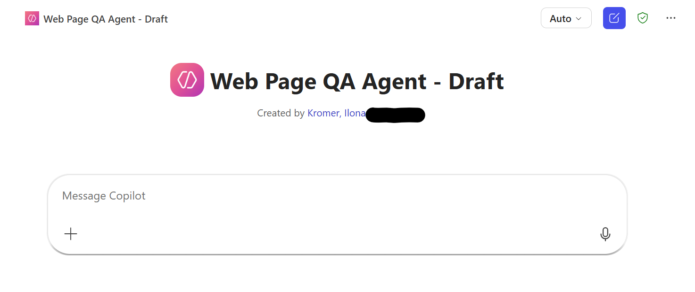
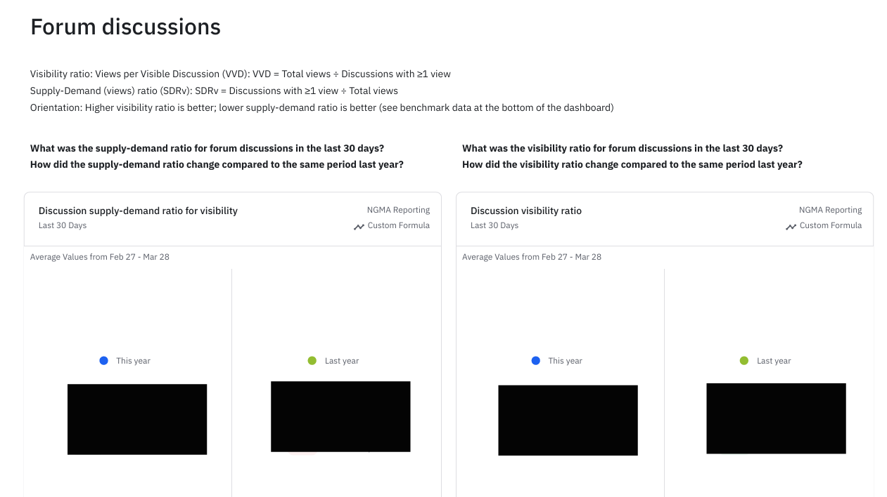

Projects
All projects on this page use either publicly available, synthetic or fully anonymised data. Any internal information has been removed or masked to ensure confidentiality while still demonstrating my analytical and problem‑solving approach.

Web Page QA Agent – Automated Content & Template Review
Prototype QA agent supporting pre‑publishing reviews of publicly accessible web pages. It checks visible content for naming consistency, grammar and style alignment, CTA wording, link hygiene and basic template structure. The example shown uses a public Siemens Polarion page; no internal data or CMS context is included.
Goal: Provide a fast, consistent first‑pass review that helps content teams identify potential issues early and reduce manual QA effort, while keeping human reviewers in control.
Approach:
- Defined review categories based on brand and publishing guidance.
- Built a V1 prompt architecture for structured findings.
- Designed the agent to act as a helpful early‑draft reviewer.
- Generated grouped findings with actionable suggestions.
- Validated behaviour using publicly accessible pages.
Amplitude Dashboard for Community Teams
Amplitude dashboard created as part of an internal analytics enablement initiative.
It introduces community marketers, community managers, and community‑as‑a‑product teams to essential visibility and interaction metrics.
Research question:
How can community‑focused teams use behavioural analytics to understand engagement patterns and make more informed decisions before launching campaigns or programmes?
Goal: To provide a simple, accessible starting point for data‑driven decision‑making in community work by visualising core interaction metrics and lowering the barrier to using analytics tools.
Approach:
- Designed a modular Amplitude dashboard focused on visibility and interaction metrics relevant to community engagement.
- Created change‑communication materials (short videos) to motivate adoption and explain the value of pre‑decision analytics.
- Added an AI‑generated initial analysis to help new users interpret the dashboard and understand where to start.
- Researched and contextualized benchmark data to help teams interpret their metrics and understand how their engagement levels compare to typical patterns.


Understanding Platform Economy Fundamentals
A reference document synthesizing publicly available platform-economy concepts to help teams understand the shift from pipeline to platform business models. All internal information was removed.
Research questions: How do platform businesses differ from pipeline businesses?
What’s the value of ecosystems in the platform economy?
Goal: To give cross‑functional teams a shared foundation on platform models, network effects, and ecosystem dynamics — enabling better alignment between product, engineering, and experience design in a transitioning business model.
Approach:
- Synthesized key concepts from Platform Revolution and leading platform‑economy research.
- Mapped differences between pipeline and platform models (value creation, supply chains, network effects).
- Identified platform types relevant to B2B (technology, data, intelligent services, marketplaces).
- Highlighted implications for partner enablement, customer experience, and digital product design.
- Created a structured reference document to support internal communication and alignment.
Ride Behaviour Dashboard
A Tableau Public dashboard created as part of the Google Business Intelligence Certificate programme.
It visualises key differences between casual and member riders, focusing on ride volume, duration, weekday patterns, and hourly usage.
Research question:
How do casual and member riders differ in their usage patterns, and which behavioural indicators explain these differences?
Goal: To identify and visualise key behavioural patterns across rider segments, enabling clear, data‑driven insights into usage frequency, trip duration, and temporal ride dynamics.
Approach:
- Cleaned and segmented the Cyclistic dataset into casual and member riders.
- Built comparative visualisations (weekday distribution, hourly heatmaps, ride duration patterns).
- Added linked worksheets to allow verification of all insights (e.g., ride length differences).
- Structured the dashboard to highlight the most relevant behavioural contrasts.
- Synthesised findings into a concise analytical summary for quick interpretation.

Contact
Let's get in touch:
- Email: ilonakromer52@gmail.com
- LinkedIn: Ilona Kromer
- Phone: +43 681 8486 9135
- Address: Grüne Insel 25, 8680 Mürzzuschlag, Austria
- Working style: structured, collaborative, ownership‑driven and pragmatic.
Based in Austria and working fully remotely, with extensive experience collaborating across time zones and cross‑functionally with design, product, engineering and marketing teams.